NVIDIA Nsight Visual Studio Edition · 用户指南
17 个 Profile-mode 实验 + 1 个父级总览的中文译注版 · 原文： archive.docs.nvidia.com/gameworks/.../cudaexperiments/kernellevel/
Kernel 级别实验 · 原文 kernel_level_experiments.htm
NVIDIA Nsight 中的 CUDA kernel 级别实验包括以下内容：
实际占用率 · 原文 achievedoccupancy.htm
对于在 Profile 模式和 Trace 模式下记录的所有 CUDA kernel 启动，占用率实验详情面板会显示"理论占用率"，即由 kernel 启动配置和 CUDA 设备能力所决定的占用率上限。实际占用率 Profile 模式实验会测量 kernel 执行期间的占用率，并将实际值与理论值一同显示在占用率实验详情面板中。其他图表会显示每个 SM 的实际占用率，并说明如何通过调整编译器和启动参数来控制占用率。
CUDA C Programming Guide 说明了 CUDA 设备的硬件实现如何将一个 block 中相邻的线程组合成 warp。从 warp 中的线程开始执行起，直到 warp 中的所有线程都退出 kernel，该 warp 都被视为活跃。每个流多处理器（SM）上可并发活跃的 warp 数量存在上限，具体数值见 Programming Guide 的计算能力表。占用率被定义为 SM 上活跃 warp 数量与该 SM 所支持的最大活跃 warp 数量之比。占用率会随着 warp 的开始和结束而随时间变化，且每个 SM 上的占用率可能不同。
低占用率会导致较差的指令发射效率，因为没有足够的合格 warp 来隐藏依赖指令之间的延迟。当占用率已足够高以隐藏延迟时，继续提高占用率反而可能因每线程可用资源减少而降低性能。kernel 性能分析的早期步骤之一应该是检查占用率，并观察在不同占用率水平下运行时对 kernel 执行时间的影响。
活跃 warp 数量（也即占用率）存在一个上限，该上限可以从启动配置、kernel 的编译选项和设备能力推导出来。kernel 启动时的每个 block 会被分配到某个 SM 上执行。从 block 中的 warp 开始执行起，直到 block 中所有 warp 都退出 kernel，该 block 都被视为活跃。SM 上可并发执行的 block 数量受下面所列因素限制。活跃 warp 数量的上限等于活跃 block 数量上限与每个 block 中 warp 数量的乘积。因此，可以通过增加每个 block 中的 warp 数量（由 block 维度决定），或通过改变限制 SM 可容纳 block 数量的因素以允许更多活跃 block，来提高活跃 warp 数量的上限。限制因素如下：


理论占用率给出了 SM 上活跃 warp 的上界，但实际活跃 warp 数量会随着 warp 的开始与结束在 kernel 执行期间发生变化。如发射效率中所述，一个 SM 包含一个或多个 warp 调度器。每个 warp 调度器都会尝试在每个时钟周期从某个 warp 发射指令。要充分隐藏依赖指令之间的延迟，每个调度器在每个时钟周期都必须有至少一个 warp 合格、可发射指令。在 kernel 整个执行过程中尽可能多地维持活跃 warp（即保持高占用率），有助于避免出现所有 warp 都停顿、没有指令被发射的情况。实际占用率是在每个 warp 调度器上使用硬件性能计数器、对该调度器上每个时钟周期的活跃 warp 数进行计数得到的。这些计数随后会跨每个 SM 的所有 warp 调度器累加，再除以该 SM 活跃的时钟周期数，从而得到每个 SM 的平均活跃 warp 数。再除以该 SM 所支持的最大活跃 warp 数，就得到 kernel 执行期间每个 SM 的平均实际占用率，并展示在实际占用率图表中。对所有 SM 求平均即得到整体实际占用率，该数值会与理论占用率一同显示在实验详情面板中。
实际占用率不可能超过理论占用率，所以提高占用率的第一步应该是通过调整限制因素来提高理论占用率。下一步是检查实际值是否接近理论值。当 SM 活跃期间未能始终维持理论上的活跃 warp 数时，实际值就会低于理论值。这种情况会在以下场景中发生：
变动 Block 大小
展示在其他参数保持不变的情况下，变动 block 大小如何影响理论占用率。圆圈标记点显示当前每个 block 的线程数和当前活跃 warp 上限。注意，活跃 warp 数并非每个 block 的 warp 数（后者是每 block 线程数除以 warp 大小并向上取整得到）。如果图表中的曲线高于圆圈，则说明在不改动其他因素的情况下，仅通过改变 block 大小就可以提高占用率。 |
变动寄存器数
展示在其他参数保持不变的情况下，变动寄存器数如何影响理论占用率。圆圈标记点显示当前每线程的寄存器数和当前活跃 warp 上限。如果图表中的曲线高于圆圈，则说明在不改动其他因素的情况下，仅通过改变每线程寄存器数就可以提高占用率。 |
变动共享内存用量
展示在其他参数保持不变的情况下，变动共享内存用量如何影响理论占用率。圆圈标记点显示当前每个 block 的共享内存大小和当前活跃 warp 上限。如果图表中的曲线高于圆圈，则说明在不改动其他因素的情况下，仅通过改变每个 block 的共享内存大小就可以提高占用率。 |
每个 SM 的实际占用率
每个 SM 的实际占用率。所报告的值是在 kernel 执行期间对所有 warp 调度器求平均得到的。横跨所有柱状条的那条线是平均值，对应于其他表格中所报告的实际占用率。 |
发射效率 · 原文 issueefficiency.htm
发射效率实验提供有关设备发射指令能力的信息。其核心是回答这样一个问题：设备是否能够在每个周期都成功发射指令。如果做不到这一点，就不可避免地会降低 kernel 的潜在峰值性能。理解无法连续背靠背发射指令的根因，是分析 kernel 性能时一个很好的高层级初步排查切入点。
对于计算能力 2.0 及更高的设备，每个流多处理器（SM）都配备了多个 warp 调度器。每个 warp 调度器管理一个由硬件给定的固定最大 warp 数量。这就定义了每个 SM 上 warp 的设备上限——即同时驻留在每个 SM 上的 warp 数量的上界。kernel 启动的执行配置可能因资源约束进一步限制可驻留 warp 数（详细信息见……）。理论占用率定义了 SM 上 warp 并行度的最高上限。到目前为止讨论的所有信息都是由目标设备、kernel 的源代码及启动参数静态确定的。在运行时，每个周期同时分配给某个多处理器的 warp 数被称为活跃 warp。在最佳情况下，kernel 执行期间的平均活跃 warp 数等于或非常接近理论占用率。但如果调度器未能在各 warp 调度器之间均匀地平衡工作，或者干脆没有剩余的工作可发射以填满机器，那么实际的活跃 warp 数就可能明显低于理论占用率。上述指标之间的关系如下：
Device Limit >= Theoretical Occupancy >= Active Warps
活跃 warp 集合可以理解为在运行时某一时刻可以推进执行的候选池。然而，并非所有活跃 warp 都一定能发射其下一条指令。例如，某个 warp 可能正停在 barrier 处等待其他 warp 跟上，或者尚未取到下一条指令，又或者在等待先前指令的结果就绪。按是否能发射下一条指令对活跃 warp 进行划分，可得到无法推进执行的停顿 warp子集和已准备好发射下一条指令的合格 warp子集。更具体地说，一个活跃 warp 被视为合格的条件是：指令已取回、指令所需的执行单元可用、且指令的所有依赖均已满足。按定义，这些指标之间的关系可表示为：
Active Warps == Stalled Warps + Eligible Warps
在每个周期，每个 warp 调度器都会从合格 warp 中挑选一个并发射一条或多条指令。如果某个周期没有合格 warp 可用，调度器就失去了推进执行的机会，处理单元也可能因此闲置。由于每个调度器在每个周期要么不挑选 warp，要么恰好挑选一个 warp，所以每个多处理器每个周期的已选 warp数处于 [0 .. # Warp Schedulers per SM] 范围之内。要保证每个调度器在每个周期都能发射指令，就需要每个 warp 调度器在每个周期都至少有一个合格 warp 可用。因此，每个调度器合格 warp 数的目标值是每个周期至少有一个或多个 warp 可用。在 SM 层面上，这意味着合格 warp 数至少要等于 warp 调度器数量。

每个 SM 的 warp 数
概览本文档背景章节中讨论的、每个 SM 的各种 warp 指标。这些指标以整个 kernel 执行期间、目标设备各个 SM 上的平均值给出。Y 轴按设备上限进行缩放。 即便平均来看有足够多的合格 warp，也并不一定保证从未出现某个周期内某个 warp 调度器漏发一条指令的情况。 指标活跃 warp warp 从被调度到某个多处理器的那一刻起，直到完成其最后一条指令期间都是活跃的。每个 warp 调度器维护其自己已分配的活跃 warp 列表。warp 与调度器的分配在 warp 变为活跃时一次性完成，并在该 warp 的整个生命周期内有效。一个粗略的指导原则是：每个 warp 调度器至少应有 8 个活跃 warp。更多的活跃 warp 可能让 warp 延迟得以更有效地隐藏。 合格 warp 如果一个活跃 warp 能够发射下一条指令，就被视为合格。每个 warp 调度器都会从合格 warp 池中挑选下一个发射指令的 warp。不合格的 warp 会报告一个发射停顿原因。目标是每个调度器每个周期至少有一个合格 warp。 理论占用率 理论占用率作为每个 SM 上活跃 warp（也即合格 warp）的上限，由 kernel 启动的执行配置所定义。更详细的内容见实际占用率实验。 |
Warp 发射效率
整个 GPU 上各周期合格 warp 可用情况的分布。所给数值是在 kernel 执行期间跨所有 warp 调度器求和得到的。 在计算能力 2.x 的设备上，该图表显示三个指标。"没有合格 warp"意味着两个 warp 调度器都未能发射。"一个合格"表示只有一个 warp 调度器有可用的合格 warp。"两个或更多"则保证两个 warp 调度器都发射了一条指令。 指标没有合格 warp 调度器没有合格 warp 可供挑选、因而未发射指令的周期数。没有合格 warp 的周期占比越低，代码在目标设备上的运行就越高效。如果该值较高，请查看发射停顿原因以了解是什么导致 warp 无法变为合格。 一个或更多合格 warp 调度器至少有一个合格 warp 可供挑选的周期数。该指标等于所有 warp 调度器累加之后、发射了指令的总周期数。该值越高越好，目标是接近 100%。 |
--use_fast_math 来快速检验此类优化方法的潜在效果。
指令统计 · 原文 instructionstatistics.htm
指令统计实验为理解 kernel 执行时目标设备的整体利用情况提供了第一层级的初步排查信息。它回答以下问题：kernel grid 是否能在整个执行期间持续让所有多处理器保持忙碌？工作负载是否在各处之间均衡分布？实际达到的指令吞吐量是否接近硬件的峰值性能？
对于计算能力 2.0 及更高的设备，全局工作分发引擎会将线程 block 调度到流多处理器（SM）上执行。如果一个多处理器至少被分配到一个 warp，就被视为活跃。在 kernel 执行期间某 SM 处于活跃状态的总周期数被定义为活跃周期。
每个多处理器都暴露多个 warp 调度器，能够每个周期至少执行一条指令。Fermi 架构（计算能力 2.x）上每个 SM 有两个 warp 调度器；Kepler 架构（计算能力 3.x）上每个 SM 配备四个 warp 调度器。在每次指令发射时刻，每个 warp 调度器都会从其分配到的 warp 列表中挑选一个能够推进执行的 warp。对该选中的 warp，调度器随后要么发射下一条单条指令，要么发射下两条指令。双发射在计算能力 2.x 及更高的设备上得到支持，且仅适用于相互独立的指令。
一个 warp 调度器可能需要多次发射同一条指令，才能真正完成 warp 中全部 32 个线程的执行。已发射指令数与已执行指令数之间存在差异主要有两个原因：第一，内存操作上的地址分歧和 bank 冲突（详见各计算能力技术规范中的内存章节）。第二，某些汇编指令每个周期只能为半个 warp 发射，因此需要发射两次。双精度浮点指令就是此类指令的典型例子。由于每条已执行指令至少要被发射一次，因此下面这一关系在所有情况下都成立：
Instructions Issued >= Instructions Executed
多次发射同一条指令也被称为指令重发（Instruction Replay）。每次重发迭代都会占用该 warp 调度器原本可用于发射新指令、推进执行的能力。同时，每次指令重发都会消耗处理该指令所需的计算资源。简而言之，所需的指令重发迭代越多，对 kernel 执行的性能影响就越大。
每时钟周期指令数（IPC）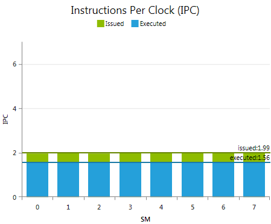 一张 z 序柱状图，分别展示每个 SM 上已发射指令与已执行指令所达到的吞吐量。理论 IPC 峰值是一项设备上限，由目标设备的计算能力决定。Y 轴按该峰值进行缩放。 IPC 峰值是单个周期可达到的最大已执行指令数。可持续维持的已执行 IPC 最大值可能会更低。 指标已发射 IPC 考虑所有指令重发迭代的情况下，每周期平均已发射的指令数。该值越接近"已执行 IPC"越好。如本文档背景章节所述，某些汇编指令需要多次发射。因此，该指标的最优目标值取决于指令的组合。 已执行 IPC 每周期平均已执行的指令数。数值越高，表明对所有可用资源的使用越高效。请注意，所报告的数值是按每个多处理器给出的。由于多处理器中的每个 warp 调度器都能独立执行指令，所以"每周期执行一条指令"的目标意味着平均 IPC 应等于每个 SM 的 warp 调度器数量。对一个 kernel 而言，可达到的最大目标 IPC 取决于其所执行指令的组合。 |
SM 活动率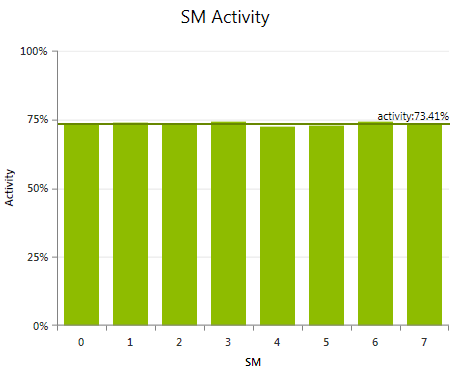 展示 kernel 启动期间每个多处理器处于活跃状态的时间占比。如果一个多处理器当前至少被分配了一个 warp 来执行，则被视为活跃。即便 kernel grid 尚未完成，由于负载严重不均衡，某个 SM 也可能处于非活跃状态。SM 之间负载分布不均可能由以下几种因素引起：kernel 中各 block 的执行时间不同、各 SM 被调度的 block 数量存在差异，或两者兼有。 负载不均衡的可观察结果是各多处理器之间的活动率数值差异显著：原因很简单——部分 SM 仍在忙于执行工作，而其他 SM 已经完成了自己的份额、由于没有更多可调度的工作项而处于空闲。这通常被称为尾部效应。block 数量较少的小型 kernel grid 更容易受到尾部效应的影响。并发 kernel 执行可以利用空闲的多处理器去处理后续的 kernel 启动。由于 profile 类活动是对每次 kernel 启动单独进行观察的，profile 结果只能指示出尾部效应的存在。要分析并发 kernel 执行的有效性，请运行 CUDA trace 类活动。 |
每 warp 指令数（IPW）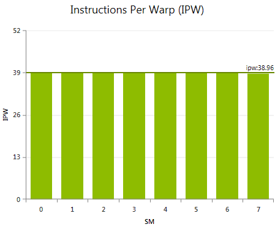 展示每个多处理器上每个 warp 平均已执行的指令数。各 SM 之间 IPW 指标差异较大，表明 kernel grid 中各 block 的工作负载不一致。这种不均衡并不一定会导致性能低下，但 IPW 对于理解 SM 活动率差异的原因非常有用。 导致 IPW 出现较大差异最常见的代码模式，是其条件表达式依赖于 block 索引的条件执行代码块。例子包括：仅对某一个 block 执行的特殊预处理或后处理操作；或者仅对 grid 中某一部分触发的、代价高昂的边界条件检测与处理。 |
启动的 warp 数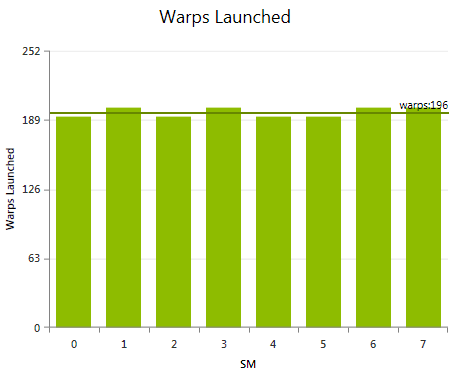 展示在所执行 kernel grid 中，每个多处理器上启动的 warp 总数。各 SM 之间启动 warp 数差异较大，最常见的原因是 kernel grid 提供的并行度不足。更具体地说，是 kernel block 数量过少，不足以充分利用所有可用的计算资源。仅当一个或多个 SM 上的 SM 活动率较低时，启动 warp 数差异大才是一个需要关注的问题。这种情况下，可以考虑采用另一种工作划分方式，使每个 warp 的执行时长方差更小，或者启动更多的线程 block，两者都有助于工作分发器更均匀地分发给定的工作。 |
实际 FLOPS · 原文 achievedflops.htm
每秒浮点运算次数（FLOPS）是比较不同算法、不同实现变体或不同计算设备的常用指标。在优化 kernel 代码时，它的主要价值在于估计一种实现与目标设备的理论算术峰值性能的接近程度。基于此，它可以用来跟踪 kernel 性能优化的进展；尽管该指标本身对"是什么导致了性能偏低"提供的洞察有限。
所有 CUDA 计算设备都遵循 IEEE 754-2008 二进制浮点表示标准，但存在一些小的例外。这些例外在 CUDA C Programming Guide 的 浮点标准 一节中有详细描述。其中一个关键差异是融合乘加（FMA）指令，它将乘法和加法合并为一条指令执行。其结果通常与分别执行两步运算所得到的结果略有不同。
本文档中对具体汇编指令的引用，指的是硬件的实际指令集架构（ISA），称为 SASS。关于不同 CUDA 计算架构 SASS 汇编指令的描述和完整列表，请参阅 NVIDIA CUDA 工具 cuobjdump 的文档。
浮点运算
报告按指令类别分组的已执行浮点指令命中数的加权和。所应用的权重可以在数据收集前通过 Activity 页面上的 实验配置 自定义。 根据实际操作和所使用的编译器选项不同，CUDA C 中一条浮点指令在汇编代码中可能对应多条指令。所报告的数值是基于已执行的汇编指令，因此数字可能与仅从 CUDA C 代码推断出的预期不一致。可使用 源码视图 页面研究高级代码与汇编代码之间的映射关系。 指标Single ADD
所有已执行的单精度浮点加法（ Single MUL
所有已执行的单精度浮点乘法（ Single FMA
所有已执行的单精度浮点融合乘加（ Single Special
所有已执行的单精度特殊运算的加权和，包括倒数（ Double ADD
所有已执行的双精度浮点加法（ Double MUL
所有已执行的双精度浮点乘法（ Double FMA
所有已执行的双精度融合乘加（ Double Special
所有已执行的双精度特殊运算的加权和，包括倒数（ |
每秒浮点运算次数
报告单精度和双精度下，每秒已执行浮点指令命中数的加权和。该图表是一个堆叠柱状图，所使用的指令类别与 浮点运算 图表完全相同。 指标Single
所有已执行的单精度运算每秒的加权和。一个 CUDA 设备的单精度浮点峰值性能定义为 CUDA Cores 数乘以图形时钟频率再乘以 2。乘以 2 的因子来自使用融合乘加（ Double 所有已执行的双精度运算每秒的加权和。 |
CUDA C Best Practices Guide 给出了若干优化浮点 算术指令 的通用建议：
同时也尽量减少所执行的低吞吐量算术指令数量。CUDA C Programming Guide 给出了各计算能力下所有原生 算术指令 的预期吞吐量列表。
实际 IOPS · 原文 achievediops.htm
了解已执行的整数运算数量和指令构成，对于为 kernel 给出合理的性能预期估计是一项有用的输入。同时它也是更好地理解许多其他指标和实验的基础。与 实际 FLOPS 实验类似，它的主要价值在于跟踪并评估代码改动带来的性能差异，而不是推导性能受限的真正原因。
在计算能力 1.x 的设备上，32 位整数乘法由于不被原生支持，因此使用多条指令实现。然而 24 位整数乘法通过 __[u]mul24 内建函数得到原生支持。对于受指令限制的 kernel，在可能的情况下使用 __[u]mul24 替代 32 位乘法运算符通常可以提升性能。但在使用 __[u]mul24 反而抑制了编译器优化的情况下，效果可能相反。
在计算能力 2.x 及以上的设备上，32 位整数乘法被原生支持，而 24 位整数乘法则不被原生支持。因此 __[u]mul24 会使用多条指令实现，应避免使用。
整数除法和模运算代价高昂：在计算能力 1.x 的设备上需要数十条指令，在计算能力 2.x 及以上的设备上需要不到 20 条指令。在某些情况下它们可以用位运算替代：如果 n 是 2 的幂，(i/n) 等价于 (i>>log2(n))，(i%n) 等价于 (i&(n-1))；如果 n 是字面常量，编译器会自动完成这些转换。
本文档中对具体汇编指令的引用，指的是硬件的实际指令集架构（ISA），称为 SASS。关于不同 CUDA 计算架构 SASS 汇编指令的描述和完整列表，请参阅 NVIDIA CUDA 工具 cuobjdump 的文档。
整数运算
报告按指令类别分组的已执行整数指令命中数的加权和。所应用的权重可以在数据收集前通过 Activity 页面上的 实验配置 自定义。 根据实际操作和所使用的编译器选项不同，CUDA C 中一条整数指令在汇编代码中可能对应多条指令。所报告的数值是基于已执行的汇编指令，因此数字可能与仅从 CUDA C 代码推断出的预期不一致。可使用 源码视图 页面研究高级代码与汇编代码之间的映射关系。 指标ADD
所有已执行的整数加法（ MUL
所有已执行的整数乘法（ MAD
所有已执行的整数乘加（ SAD
所有已执行的绝对差之和（ SCADD
所有已执行的移位加（ Shifts
所有已执行的移位指令的加权和，涵盖右移（ Bit Ops
所有已执行的整数位运算的加权和。具体包括位域提取（ |
每秒整数运算次数
报告每秒已执行整数指令命中数的加权和。该图表是一个堆叠柱状图，所使用的指令类别与 整数运算 图表完全相同。 指标Math 所有已执行的整数算术指令每秒的加权和。汇总了 整数运算 图表中 ADD、MUL、MAD、SAD 和 SCADD 的各自贡献。 Other 移位指令和位运算每秒的加权和。 |
CUDA C Best Practices Guide 给出了若干优化整数 算术指令 的通用建议：
同时也尽量减少所执行的低吞吐量算术指令数量。CUDA C Programming Guide 给出了各计算能力下所有原生 算术指令 的预期吞吐量列表。
流水线利用率 · 原文 pipeutilization.htm
CUDA 设备的每个流多处理器（SM）都包含许多专门执行特定任务的硬件单元。在芯片层面，这些单元提供执行流水线，warp 调度器将指令分派到这些流水线上。例如，纹理单元负责执行纹理读取并完成纹理过滤；Load/Store 单元负责从内存读取数据或将数据写回内存。理解这些流水线的利用率，并了解它们距离目标设备的峰值性能还有多远，是分析 kernel 执行效率的关键信息；同时也可以帮助识别由于某种类型流水线被过度使用而导致的性能瓶颈。
Kepler GK110 白皮书 和 NVIDIA GeForce GTX 680 白皮书 都描述并对比了最新 CUDA 计算设备的架构细节。下表简要列出了每个 SM 中各类单元的数量以及对应流水线的每周期吞吐量：
| Fermi (cc 2.0) | Kepler (cc 3.x) | ||||
|---|---|---|---|---|---|
| 单元数量 | 吞吐量 | 单元数量 | 吞吐量 | ||
| Load/Store | 16 | 16 | 32 | 32 | |
| 纹理（Texture） | 4 | 4 | 16 | 16 | |
| 算术运算 | FP32 | 32 | 64 | 192 | 192 |
| SFU | 4 | 8 | 32 | 32 | |
相对于这些架构吞吐量数值，流水线利用率指标报告的是运行时每条流水线观察到的利用率。高流水线利用率表明在 kernel 执行期间相应的计算资源被大量使用且经常处于繁忙状态。低值则说明该流水线使用频率不高、资源处于空闲。每条流水线的结果相互独立；将两条或多条流水线的利用率百分比相加并不会得到有意义的数值。由于流水线指标是 kernel 启动持续时间内的平均值，因此较低的值并不能完全排除该流水线在 kernel 执行某个时间点曾是瓶颈的可能。
算术指令由多种流水线执行，上表中以 32 位浮点指令和特殊函数运算两个例子作为示意。这些流水线提供的吞吐量差异很大，进而导致 CUDA C Programming Guide 中记录的 原生算术指令吞吐量 各不相同。对于本实验所支持的 CUDA 设备，这些算术吞吐量如下：
| 计算能力 | ||||
|---|---|---|---|---|
| 2.0 | 2.1 | 3.0 | 3.5 | |
| 32 位浮点加法、乘法、乘加 | 32 | 48 | 192 | 192 |
| 64 位浮点加法、乘法、乘加 | ≤16 | 4 | 8 | 64 |
| 32 位浮点倒数、倒数平方根、以 2 为底的对数、以 2 为底的指数、正弦、余弦 | 4 | 8 | 32 | 32 |
| 32 位整数加法、扩展精度加法、减法、扩展精度减法、最小值、最大值 | 32 | 48 | 160 | 160 |
| 32 位整数乘法、乘加、扩展精度乘加、绝对差之和、置位计数、前导零计数、最高非符号位 | 16 | 16 | 32 | 32 |
| 32 位整数移位 | 16 | 16 | 32 | ≤64 |
| 32 位整数位反转、位域提取/插入 | 16 | 16 | 32 | 64 |
| 逻辑运算 | 32 | 48 | 160 | 160 |
| Warp shuffle | - | - | 32 | 32 |
| 从 8 位、16 位整数到 32 位类型的类型转换 | 16 | 16 | 128 | 128 |
| 与 64 位类型之间的相互转换 | ≤16 | 4 | 8 | 32 |
| 所有其他类型转换 | 16 | 16 | 32 | 32 |
按定义，指令吞吐量描述了每个 SM 每周期可以处理多少操作。换句话说，吞吐量高的操作在发射时的代价比吞吐量低的操作要小。算术负载使用这一简化的成本模型——将发射的指令数按对应指令吞吐量的倒数加权。这样做可以评估每种算术指令对总体处理代价的占比有多大。这对于算术流水线利用率较高的 kernel 尤其有用，可以用来识别哪一类算术运算可能已经触及可用吞吐量的上限。
流水线利用率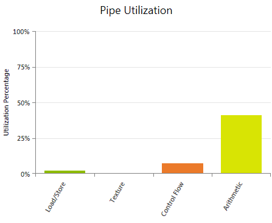 显示在 kernel 执行期间 SM 上四条主要逻辑流水线的平均利用率。可用于判断某条流水线是否被过度使用，从而成为限制 kernel 性能的瓶颈；也有助于估计增加额外工作量后是否还能很好地扩展、还是会触及流水线上限。这里的"增加工作量"可以指：增加算术负载（例如提高某些计算的精度）、增加内存操作数量（包括引入寄存器溢出），或者通过增加每个 SM 上的 活跃 warp 数量来改善指令延迟隐藏。 报告的数值是 kernel 执行持续时间内的平均值。较低的利用率百分比并不能保证该流水线在 kernel 执行过程中从未发生过过载。 指标Load / Store
覆盖所有发射的、会向目标设备内存系统发出请求的指令——不包括纹理操作。包含针对全局内存、本地内存、共享内存的加载和存储操作，以及任何原子操作。也包含寄存器溢出。计算能力 3.5 及以上的设备支持通过 只读数据缓存（ 纹理（Texture）
覆盖所有发射的纹理读取指令；对于计算能力 3.5 及以上的设备，还包括通过 只读数据缓存（ 控制流
覆盖所有可能影响控制流的发射指令，例如分支指令（ 算术运算 覆盖所有发射的浮点指令、整数指令、转换操作和移动指令。每一类对应的汇编指令详细列表请参阅 指令集参考。如果算术流水线利用率较高，请查看 算术负载 图表，以识别代价最高的指令类型。 |
算术负载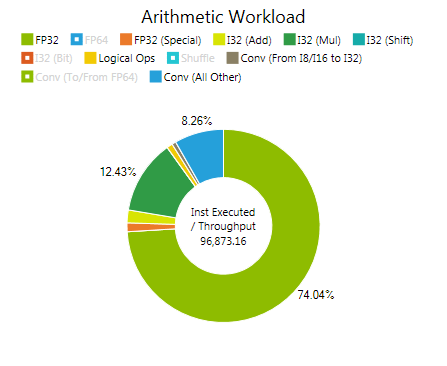 给出多种算术指令类别的估计代价分布。该成本模型以发射数乘以对应指令吞吐量的倒数作为加权。指令类别与本文档背景章节中算术吞吐量表的行一一对应。 算术指令由芯片上的多条流水线执行，它们可以并行工作。因此，算术负载的分布并不是 流水线利用率 图中算术流水线百分比的真正划分；但代价估计最高的指令类型，最有可能是导致片上流水线利用率最高的来源。 指标下列指标描述中所有对具体汇编指令的引用，均指 CUDA 设备的原生指令集架构（ISA），详见 指令集参考。 FP32
所有 32 位浮点加法（ FP64
所有 64 位浮点加法（ FP32（特殊函数）
所有 32 位浮点倒数（ I32（Add）
所有 32 位整数加法（ I32（Mul）
所有 32 位整数乘法（ I32（Shift）
所有 32 位整数左移（ I32（Bit）
所有 32 位整数位反转、位域提取（ 逻辑运算
所有逻辑运算（ Shuffle
所有 warp shuffle（ Conv（I8/I16 到 I32）
所有从 8 位、16 位整数到 32 位类型的类型转换的估计负载（ Conv（与 FP64 互转）
所有与 64 位类型相互转换的类型转换的估计负载（ Conv（其他全部）
所有其他类型转换的估计负载（ |
--ptxas-options=-v）以获取溢出字节数；如果该数值较高，可尝试通过修改 kernel 启动的 执行配置 或 launch bounds 来减少寄存器溢出。
分支统计 · 原文 branchstatistics.htm
控制流可能对 kernel 的执行效率产生严重影响，尤其是当大量控制流判定都是分歧的，迫使一个 warp 中的线程在 kernel 代码中走上完全不同的控制路径时。分支统计实验有助于回答以下问题：控制流指令被执行了多少次、其中有多少是一致的、有多少是分歧的，以及控制流对整体 kernel 执行性能的影响有多大。
如果一条控制流指令迫使 warp 中的线程走上不同的执行路径，则该指令被视为分歧的。一旦发生这种情况，由于一个 warp 中的所有线程共享一个程序计数器，不同的执行路径必须被串行化执行；这会增加该 warp 所执行的指令总数。当所有不同的执行路径都完成后，线程才会重新汇合到同一条执行路径。如果条件表达式对一个 warp 中的所有线程评估出一致的判定结果，则只执行被选中的那一条代码路径——因此开销小得多。所执行的一致控制流判定数与全部条件判定执行数之比定义为分支效率（Branch Efficiency）。
分歧控制流造成的实际性能影响，与需要评估多少条不同代码路径以及被串行化的代码段有多昂贵的组合成正比。一种刻画方法是：跟踪所有已执行指令中，warp 内实际参与执行（即未被谓词执行屏蔽掉）的线程数。这通常被称为控制流效率（Control Flow Efficiency）。按定义，它与做出多少次控制流判定无关，而是给出了由于控制流而导致的可用计算资源利用率的上限。
每 warp 分支数
按条件语句的判定结果分组，显示每个 SM 上每个 warp 平均执行的分支指令数。可用于研究 kernel grid 中各 warp 所执行的控制流指令总量。将每 warp 执行的分支指令数与 指令统计 实验中 IPW 指标所报告的每 warp 已执行指令总数进行对比，可以了解 kernel 代码中执行分支指令的频率。 所报告的 taken / not taken 分支数指的是在设备上实际执行的条件语句。如果编译器在优化阶段选择了对条件取反，这并不一定与 CUDA C 或 PTX 代码中表达的定义一致。可查看 源码视图 页面以研究高级代码与汇编代码之间的映射关系。 指标Not Taken / Taken 每 warp 平均执行的、控制流判定一致的分支指令数；即一个 warp 中所有活跃线程要么全部走分支，要么全部不走。 Diverged 每 warp 平均执行的、条件在 warp 内各线程间产生不同结果的分支指令数。所有至少有一个线程参与的代码路径都会被顺序执行。该数值越低越好；不过，要理解控制流对设备利用率的影响，请同时查看 控制流效率。 |
分支条件
显示在 kernel grid 中所有 warp 上汇总后的已执行分支中一致分支与分歧分支的分布。如果分歧分支的比例较高，请考虑重新组织将负载划分到 block 和 warp 的方式；另一种负载分配方案可能能够减少分歧的控制流，同时也减少对控制流判定的总体需求。更多细节也可参阅 CUDA C Best Practices Guide 中 分支与分歧 一节。 所报告的 taken / not taken 分支数指的是在设备上实际执行的条件语句。如果编译器在优化阶段选择了对条件取反，这并不一定与 CUDA C 或 PTX 代码中表达的定义一致。可查看 源码视图 页面以研究高级代码与汇编代码之间的映射关系。 指标Not Taken / Taken 控制流判定一致的已执行分支指令总数；即一个 warp 中所有活跃线程要么全部走分支，要么全部不走。 Diverged 条件在 warp 内各线程间产生不同结果的已执行分支指令总数。所有至少有一个线程参与的代码路径都会被顺序执行。该数值越低越好；不过，要理解控制流对设备利用率的影响，请同时查看 控制流效率。 |
CUDA C Best Practices Guide 中重点强调了关于 控制流 的若干通用编码准则：
根据本实验的结果，检查以下哪些情况适用：
内存统计 · 原文 memorystatistics.htm
Nsight 提供了一系列实验，聚焦于 kernel 执行期间内存子系统的使用情况。每个独立实验覆盖 CUDA 编程模型所定义的内存层次结构中的某一特定区域：
这些内存实验可以彼此独立地采集；为避免不必要的 Profile 开销，应跳过那些覆盖 kernel 未使用的内存层次区域的实验。对于每个已执行的实验，都会在报告页面上生成一个单独的输出标签页；此外，内存实验的结果还会作为输入提供给概述（Overview）标签页。该概述以高层次的性能指标提供完整内存层次结构的汇总。本文档其余部分将更详细地描述概述标签页；如需了解某个具体内存实验的更多信息，请按上方链接进入。
表格
列出每个被覆盖的内存空间的关键性能指标。以原始数值形式重复展示图表中显示的所有信息；此外还提供一些额外指标，例如每个内存空间的重放开销。重放开销的定义为： (Transactions - Requests) / Instruction_Issued 请求数等于已执行的内存指令数。根据内存访问模式以及所访问的内存空间，单个请求可能需要多个事务才能完成对一个 warp 中所有活跃线程的请求。每多一次内存事务，都会迫使该内存指令重新发射。所需事务越多，指令需要重放的次数也越多；最终阻碍快速向前推进。详情参见指令统计实验。 列Total（总计） 以整个 kernel 执行过程的总聚合值形式报告各项数值。 Per Warp（每 warp） 以每个 warp 为单位报告适用的指标。便于快速与 kernel 开发期间得出的估算值进行比较。 Per Second（每秒） 以与 kernel 执行时长相关的方式报告适用的指标。对于表示传输字节数的行，该列数值即为实际达到的内存吞吐量。目标设备到设备内存的架构峰值内存带宽可在 GPU 设备报告页查看。 |
内存统计 — 缓冲区 · 原文 memorystatisticsbuffers.htm
缓冲区是位于 CUDA 设备上或系统内存中的内存。到设备内存的带宽高于到系统内存的带宽，但各级缓存和共享内存能够提供更低得多的延迟和更高的带宽。因此，访问设备内存和系统内存的最高效方式，是在数据可以存放到共享内存或缓存中时，避免对同一缓冲区数据进行多次重复访问。由于对设备内存和系统内存的初次访问无法避免，这些访问往往会成为性能瓶颈，因此监控缓冲区的带宽十分重要。
内存统计 — 缓存 · 原文 memorystatisticscaches.htm
CUDA 设备的数据缓存层次结构在 Programming Guide 的各计算能力章节中均有描述，例如 2.x 与 3.x。一般而言，存在三类数据缓存：L1、L2 和纹理缓存。从缓存中加载数据是通过固定大小的事务完成的。L1 事务为 128 字节，L2 和纹理事务为 32 字节。优化内存使用的一项重要策略，是将加载和存储成组进行，以尽可能少的缓存事务访问所需的数据。对于同时被 L1 和 L2 缓存的内存，若一个 warp 中的每个线程都从分散位置加载一个 4 字节值，并且这些访问都在 L1 缓存中未命中，则每个线程都会产生一次 128 字节的 L1 事务以及四次 32 字节的 L2 事务。这将导致加载指令的重新发射次数比这些值相邻且按缓存对齐时多 32 倍。如果缓存之间的带宽成为瓶颈，可以通过重排数据或调整算法以更均匀地访问数据来缓解该问题。更多详情参见 Programming Guide 的全局内存章节。
图表
缓存全局内存访问要么经过 L1 和 L2 缓存，要么仅经过 L2 缓存，具体取决于架构和所使用的指令类型。全局只读内存访问经过纹理缓存和 L2 缓存。关于如何控制全局访问是否绕过 L1，请参见内存统计 — 全局内存实验。本地内存访问经过 L1 和 L2 缓存；关于本地内存访问的更多信息，请参见内存统计 — 本地内存实验。纹理内存是只读的设备内存，访问经过纹理缓存和 L2 缓存；关于纹理访问的详情，请参见内存统计 — 纹理内存实验。共享内存访问不经过任何缓存。 |
内存统计 — 全局内存 · 原文 memorystatisticsglobal.htm
全局内存位于设备内存中，可通过两种不同的数据通路进行访问：从计算能力 2.x 及更高的设备开始，全局内存流量经数据缓存（L1 缓存和/或 L2 缓存）路由。在计算能力 3.5 的设备上独有的另一选项是：只读全局内存访问可以通过纹理缓存来进行——使用标准指针即可，无需事先绑定纹理，也不受标准纹理的尺寸限制。
无论使用哪条数据通路，编译器都允许控制沿途各缓存的行为。通过 -dlcm 编译标志，可以在编译时配置全局内存访问是缓存在该数据通路上所有可用的缓存中（-Xptxas -dlcm=ca，这是默认设置），还是仅缓存在 L2 中（-Xptxas -dlcm=cg）。编译器设置提供按编译模块的全局控制，而内联 PTX 汇编则可对每条内存指令进行显式控制（参见 PTX ISA 定义中的 Cache Operators 章节）。在本实验的输出中，所使用的缓存行为差异以 Cached Loads（带缓存的加载）和 Uncached Loads（不带缓存的加载）来标识。前者先经过 L1 缓存或纹理缓存（取决于数据通路），再经过 L2 缓存；后者仅经过 L2 缓存。
L1 缓存行为 128 字节，对应设备内存中一个 128 字节对齐的段。同时缓存在 L1 和 L2 中的内存访问（通用数据通路上的带缓存加载）以 128 字节的内存事务提供服务，而仅缓存在 L2 中的内存访问（通用数据通路上的不带缓存加载）以 32 字节的内存事务提供服务。因此，仅缓存到 L2 可以减少过度获取（over-fetch），例如在分散访问的情况下。
图表
全局只读计算能力 3.5 的设备支持通过纹理流水线所使用的同一缓存来读取全局内存。由于纹理缓存的合并规则与数据缓存有很大不同，使用这条内存通路可能提升性能——对于高度非均匀的内存访问模式尤其如此。对于受数据缓存读写带宽限制的 kernel，将部分流量通过全局只读数据通路路由还能带来额外的性能收益，因为纹理缓存是一个独立的物理单元，具有独立的数据通路；但请注意，全局只读内存访问与所有通过纹理获取产生的流量共享纹理缓存。
如果目标是支持该特性的计算设备，编译器会在合适时自动使用全局只读数据访问。为符合全局只读访问条件的内存指针添加 对于不支持全局只读数据通路的设备，图表的上半部分会显示为灰色。 全局内存
当一个 warp 执行访问通用全局内存的指令（ 每请求事务数（Transactions Per Request）图表显示每条已执行的全局内存指令平均所需的 L1 事务数，分别针对加载和存储操作。数值越低越好；对于一个满 warp 的单次内存操作，目标值为：4 字节访问 1 个事务，8 字节访问 2 个事务，16 字节访问 4 个事务。实际所需事务数取决于该次内存操作的访问模式，也取决于目标设备的计算能力。CUDA C Programming Guide 对每种计算架构的合并规则给出了详细信息（计算能力 2.x、计算能力 3.x）。 |
const __restrict__ 类型修饰符，或考虑对这些内存操作使用 __ldg() 内置函数。源代码视图页面有助于定位并核实具体的内存指令。
内存统计 — 本地内存 · 原文 memorystatisticslocal.htm
本地内存空间位于设备内存中，因此本地内存访问与全局内存访问一样具有高延迟和低带宽，并且适用于在 内存统计 — 全局内存 实验中讨论过的相同合并访问要求。然而，本地内存的组织方式使得连续的 32 位字由连续的线程 ID 访问。因此，只要 warp 中所有线程访问相同的相对地址（例如，数组变量中的同一索引、结构体变量中的同一成员），访问就是完全合并的。
本地内存访问仅针对某些自动变量发生，详细说明见 CUDA C Programming Guide 的 Variable Type Qualifiers 章节。编译器可能放置在本地内存中的自动变量包括：
此外，某些数学函数的实现路径也可能访问本地内存。运行 内存事务 实验可以告知哪些 SASS 指令引起了本地内存事务。在内存事务实验结果上使用 Source View 的代码关联功能，可以精确定位某个变量在 kernel 编译期间是否被放入了本地内存。另外，使用 --ptxas-options=-v 选项编译时，编译器会报告每个 kernel 的本地内存总用量（lmem）。
在计算能力 2.x 及以上的设备上，所有本地内存访问都始终在 L1 和 L2 中缓存。本实验的输出展示了 kernel 执行期间产生的所有本地内存流量。
图表
Load/Store Requests（请求数）等于执行的本地内存指令数量。当一个 warp 执行一条访问本地内存的指令时，它会根据每个线程访问的字大小以及线程间内存地址的分布，将 warp 内各线程的内存访问合并为一个或多个 Memory Transactions（内存事务）。一般而言，需要的事务越多，除了线程访问的字以外还要额外传输的未使用字也越多，相应地降低了指令吞吐量。此外，每个内存事务都要求该汇编指令被重复发射；如果完成一个 warp 的请求需要多于一个事务，就会导致指令重放。关于指令重放及其性能影响的更多细节，可参阅 指令统计 实验中的相关介绍。 Transactions Per Request（每请求事务数）图表分别针对加载和存储操作，显示每条执行的本地内存指令所需的平均 L1 事务数。数值越低越好；对于一个完整 warp 的单次本地内存操作，目标是 4 字节访问 1 个事务、8 字节访问 2 个事务、16 字节访问 4 个事务。warp 与 L1 缓存之间本地内存流量的 Transaction Size（事务大小）等于一整条 L1 缓存行的大小；一条 L1 缓存行为 128 字节。注意，无论 warp 中的线程是请求了缓存行中的全部数据还是仅请求了其子集，都会传输一整条缓存行。 |
--ptxas-options=-v 选项编译 kernel，并重点关注有多少寄存器需要被溢出。尽量减少溢出的寄存器数量，以减少本地内存操作的总数。
内存统计 — 共享内存 · 原文 memorystatisticsshared.htm
block 内的线程可以通过共享内存共享数据来协作，并通过同步执行来协调内存访问。由于位于片上，共享内存的带宽远高于本地或全局内存，延迟也低得多。在这一点上，共享内存相当于一个用户管理的缓存：由应用程序显式分配并访问。一种典型的编程模式是：将来自设备内存的数据暂存到共享内存中，在共享内存中处理数据并在 block 的各线程之间共享数据视图，然后将结果写回设备内存。
为了实现高带宽，共享内存被划分为大小相等的内存模块（称为 bank），可以同时访问。任意由 n 个地址组成、分别落在 n 个不同 bank 上的内存读或写请求，因而可以被同时服务，整体带宽为单个模块带宽的 n 倍。但是，如果一个内存请求的两个地址落在同一个 bank 中，就会产生 bank 冲突，访问必须被串行化。硬件会把一个存在 bank 冲突的内存请求拆分为所需数量的多个互不冲突的独立请求，吞吐量也按拆分后的请求数下降同样倍数。若拆分后的独立内存请求数为 n，则称该初始内存请求引发了 n 路 bank 冲突。为获得最佳性能，理解内存地址如何映射到 bank、以便调度访问以最小化 bank 冲突非常重要。
对于计算能力 2.x 的设备，共享内存有 32 个 bank，其组织方式是连续的 32 位字映射到连续的 bank 上。每个 bank 的带宽为每两个时钟周期 32 位。当 warp 中两个线程访问同一个 32 位字内的任意地址时，共享内存请求不会在它们之间产生 bank 冲突（即便两个地址落在同一 bank 中）。关于常见访问模式的更多细节和示例，参见 CUDA C Programming Guide 中针对计算能力 2.x 的 Shared Memory 章节。
对于计算能力 3.x 的设备，共享内存有 32 个 bank，并提供两种可通过 cudaDeviceSetSharedMemConfig() 配置的寻址模式。每个 bank 的带宽为每个时钟周期 64 位。在 64 位模式下，连续的 64 位字映射到连续的 bank 上。当 warp 中两个线程访问同一个 64 位字内的任意子字时，共享内存请求不会在它们之间产生 bank 冲突（即便这两个子字的地址落在同一 bank 中）。在 32 位模式（默认）下，连续的 32 位字映射到连续的 bank 上。当 warp 中两个线程访问同一个 32 位字内的任意子字，或访问处于同一 64 字对齐段（即首索引为 64 的倍数的段）内、且索引 i 和 j 满足 j=i+32 的两个 32 位字内的任意子字时，共享内存请求不会在它们之间产生 bank 冲突（即便这两个子字的地址落在同一 bank 中）。关于常见访问模式的更多细节和示例，参见 CUDA C Programming Guide 中针对计算能力 3.x 的 Shared Memory 章节。
图表
Load/Store Requests（请求数）等于执行的共享内存指令数量。当 warp 执行一条访问共享内存的指令时，会按前述方式解决 bank 冲突。每次 bank 冲突都会强制产生一次新的内存事务。需要的事务越多，除了线程访问的字以外还要额外传输的未使用字也越多，相应地降低了指令吞吐量。每个内存事务都要求该汇编指令再次发射；如果完成一个 warp 的请求需要多于一个事务，就会导致指令重放。关于指令重放及其性能影响的更多细节，可参阅 指令统计 实验中的相关介绍。 Transactions Per Request（每请求事务数）图表分别针对加载和存储操作，显示每条执行的共享内存指令所需的平均共享内存事务数。数值越低越好；对于一个完整 warp 的单次共享内存操作，目标是 4 字节访问和 8 字节访问都为 1 个事务，16 字节访问为 2 个事务。注意，对于给定的访问模式，理想事务数取决于访问宽度、所配置的地址模式（如果可用）以及目标计算能力。可参考 内存事务 实验中的 Ideal Shared Memory Transactions，以了解某条指令可能的最低传输次数。共享内存流量的 Transaction Size（事务大小）在计算能力 2.x 上为 128 字节，在计算能力 3.x 上为 256 字节。对于这两类设备，带宽都相当于每个 SM 每时钟周期一个事务。 |
内存统计 — 纹理内存 · 原文 memorystatisticstexture.htm
纹理内存是只读的设备内存，可以使用 Texture Functions 中描述的设备函数进行访问。使用其中一个函数读取纹理称为 texture fetch（纹理取数）。纹理内存的流量经由纹理缓存（独立于 L1 数据缓存）和 L2 缓存路由。纹理内存系统在设计上对二维数组中具有空间局部性的访问效率较高。GPU 的纹理硬件支持还提供了超出典型内存系统的特性，例如越界读取时的可定制行为，以及在数组元素坐标之间读取时的过滤插值。纹理内存的设计目标是以恒定延迟进行流式取数；纹理缓存命中可以减少设备内存带宽占用，但不会降低取数延迟。
图表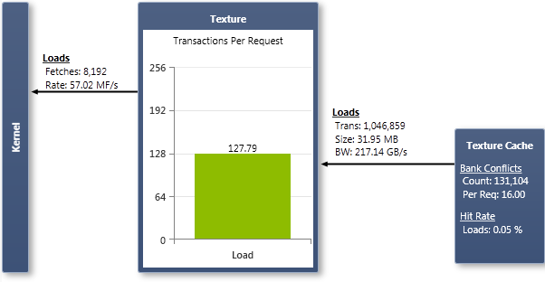
纹理（Texture）每当一个 warp 执行一次纹理函数来从纹理内存读取时，就计为一次取数（fetch）。Texture 图表显示取数次数和取数速率。一次 texture fetch 是一次内存请求，会从纹理缓存中产生事务。来自纹理缓存的事务以 32 字节为单位。
注意，本图表不包括全局只读数据访问（使用 |
内存统计 — 原子操作 · 原文 memorystatisticsatomics.htm
原子函数对位于全局或共享内存中的一个 32 位或 64 位字执行一次读—改—写的原子操作。例如，atomicAdd() 读取全局或共享内存中某个地址上的一个字，对其加上一个数，再将结果写回到同一地址。所谓原子，是指该操作保证不会被其他线程干扰地完成；换言之，在操作完成之前，没有其他线程可以访问该地址。如果一个 warp 执行的原子指令对全局内存中的同一位置进行读、改、写操作，并且 warp 中有不止一个线程访问该位置，则对该位置的每一次读/改/写都会发生且全部被串行化，但发生的顺序是未定义的。
全局内存原子操作在计算能力 3.x 的设备上的吞吐量远高于之前的架构。在早期的 GPU 上，需要多个线程并发更新内存中同一位置的算法有时不得不依赖复杂的数据重排，以尽量减少所需原子操作的数量。鉴于全局内存原子操作性能的提升，在计算能力 3.x 的设备上，许多原子操作的执行速度几乎可与内存加载相当。这可能简化需要原子性的实现，或使先前被认为不切实际的算法变得可行。
Nsight 将原子函数区分为两类操作：标准原子操作（ATOMs）会将应用原子操作之前的数据值返回给调用线程。因此会产生双向的数据流量，即进出 L1 缓存。相比之下，归约（REDs）没有返回值，数据仅从 warp 流向 L1。可以使用 Source View 页面来调查编译器使用了哪种类型的操作。
图表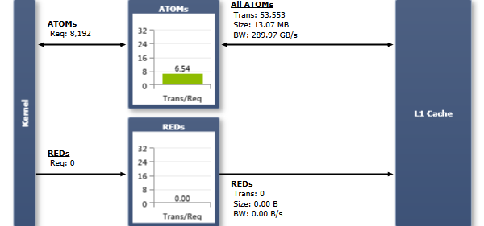 Requests（请求数）等于执行的原子指令数量。每个请求由一个或多个事务服务。实际所需的事务数量取决于操作宽度、访问的内存空间（全局或共享）以及目标计算能力。所采用的合并访问规则与对相应内存空间的内存访问行为一致（更多细节见 内存统计 — 全局内存 实验和 内存统计 — 共享内存 实验中的讨论）。一般而言，需要的事务越多，除了线程访问的字以外还要额外传输的未使用字也越多，相应地降低了指令吞吐量。此外，每个事务都要求该汇编指令再次发射；如果完成一个 warp 的请求需要多于一个事务，就会导致指令重放。 Transactions Per Request（每请求事务数）图表显示每条执行的原子指令所需的平均 L1 事务数。数值越低越好。最优目标范围为每请求 1—2 个事务。具体的最优目标值取决于所执行原子指令的组合，即使用的内存空间和操作宽度。warp 与 L1 缓存之间流量的 Transaction Size（事务大小）等于一整条 L1 缓存行的大小；一条 L1 缓存行为 128 字节。 |
反汇编正则匹配 · 原文 disassemblyregexmatch.htm
Disassembly Regex（反汇编正则匹配）实验是一个用于创建自定义实验、对指令类别进行计数的框架。该实验通过脚本进行配置：用正则表达式指定要对哪些汇编指令计数，并将这些计数的加权和命名为指定的名字。结果以图表方式呈现，图表的属性可由脚本控制。Activity 页面上的脚本编辑器提供交互式指引，以确保脚本格式正确。本实验为捕获那些定义可能各异的指标（例如每秒浮点运算次数 FLOPS）提供了一种便捷方式。
统计某一类指令的执行频率是衡量性能的常用方法。像 IPC（每周期指令数）和 FLOPS 这样的通用指标之所以流行，是因为它们概念简单、在所有架构上都可用；但即使是如此简单的指标，要做精确定义也可能并不容易。例如，在统计浮点运算时，一次融合乘加（fused-multiply-add）可以算作一次操作，也可以算作两次；精度转换可以算作零次、一次或某个分数值。能够快速重新定义要统计哪些指令以及它们的权重，就可以快速尝试不同定义的指标。本实验使用一种易于学习的脚本语言，在便利性和灵活性之间取得平衡。该语言定义了以下几类对象及其关系：
一个命名对象，表示一个符合 ECMAscript 标准的正则表达式。本实验会把 kernel 反汇编为 SASS，生成 Source View 页面中所显示的字符串值。正则表达式会被应用到每条反汇编指令上，匹配该正则的指令会被打补丁，使得每次该指令执行时都为某个计数加一。还可通过额外选项控制正则的应用方式。Search/Match 决定是在该行中搜索匹配，还是要求正则必须匹配整行。Predicate/Opcode/Instruction/Args/Comment 选择要匹配该行的哪一部分（注意 Instruction 是 Source View 中显示的完整指令助记符，而 Opcode 是指令中第一个点之前的那部分）。计数可以按线程或按 warp 进行。例如，一条在循环中执行 100 次的指令，在按 warp 模式下会使计数增加 100；在按线程模式下，若所有线程都活跃，则会增加 3200。
一个命名对象，表示若干 [Regex] 计数的加权和。Regex 对象按名称指定，每行一个，前面跟有权重。权重可以是任意正负整数或浮点数值。Regex 对象可以被多个 Counter 对象使用。
一个命名对象，表示要在报告页上以图表形式显示的一组 [Counter] 值。Counter 对象按名称指定，每行一个。Counter 对象可以被多个 Group 对象使用。图表类型是 Group 的一个选项。可以是柱状图（每个 counter 各为一根柱）、堆叠柱状图（每根柱由指定相同堆叠名的多个 counter 段组成）或饼图（每个 counter 占饼图的一块）。是显示计数值还是显示速率（计数除以时间）也是 Group 的一个选项。关于图表外观示例，请参见 实际 FLOPS 实验。
每个对象在一行中以方括号指定，括号内是类型，后接名称。名称可以包含空格以及除方括号外的任意字符。该对象的选项可以追加在该行末尾。对于 Regex 对象，定义行紧接着的一行是正则字符串，可以使用任意字符（转义按预期方式工作）。对于 Counter 和 Group 对象，从定义行往下、直到下一个定义行之间的所有行用于指定其成员（Counter 指定一组 Regex，Group 指定一组 Counter）。除了定义正则字符串的行之外（其中所有字符都被视为正则的一部分），脚本格式会忽略空白字符以及以 # 开头的行（用于书写注释）。Activity 页面上的脚本编辑器会在你修改时即时解析，并在出现错误时给出说明。如果脚本无效，Activity 将不允许启动。
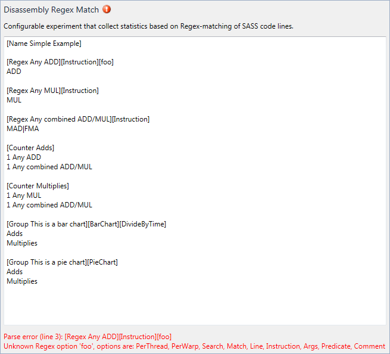
在第 3 行输入 [foo] 后，脚本编辑器说明 'foo' 不是 Regex 对象的有效选项，并列出了所有合法选项。
新建一个 Disassembly Regex 实验时显示的文本就是一个带有详细注释的示例，可用于演示语法。更复杂的示例由 实际 FLOPS 和 实际 IOPS 实验提供，它们都基于 Disassembly Regex 实验。可以把它们脚本的内容复制并粘贴到一个新的 Disassembly Regex 实验中进行修改。
性能计数器 · 原文 performancecounters.htm
提供在 kernel 执行期间从目标设备上收集性能计数器值的能力。 大多数其他实验都会使用 Performance Counters 实验所暴露的部分计数器。本实验有助于收集其他实验未涵盖的数据、计算额外的派生指标，或获取实际的原始计数器值以便用外部工具做进一步处理或比较。在同一个 Profile 会话中，可以为不同的目标架构或计数器配置多次实例化该实验。
CUDA 设备的各个硬件单元能够在 kernel 执行期间跟踪一组计数器。这些计数器在运行时更新，可在执行完成后被查询。所观测到的数值代表了硬件单元所看到的实际负载，因此通常被称为原始计数器值。许多性能指标都是直接由一个或多个原始计数器值推导得出的。
能够同时收集的计数器总数受硬件和数据收集机制的限制。每种收集机制都各有优缺点：HWPM provider 可以从 CUDA 设备上任意类型的硬件单元收集数据；但对于许多单元，它一次只能对芯片中现有硬件单元的一个子集进行采样。要完整覆盖某种单元类型的所有实例，需要多次重放（replay）通道；这会减慢数据收集速度，并存在跨多次通道错误计入工作量的风险。相比之下，SMPC provider 仅能从流多处理器（SM）收集数据，但它能够同时从所有现有 SM 上收集。如果上述两种机制都无法提供所关注的数据，SW provider 会对实际的 kernel 代码进行插桩，将信息收集作为 kernel 执行的一部分。代码插桩可以一次性从所有活跃 SM 上收集任意数量的计数器，但整体性能开销最高。而且，由于实际的 kernel 代码被修改了，收集 SW 计数器时无法在同一通道中收集其他 provider 的数据。
无论是比较来自不同通道的性能计数器值，还是计算带有多输入值的派生指标，考虑调度和 kernel 重放对所获计数器结果的影响都至关重要。虽然每次重放通道都使用完全相同的输入并执行相同的计算，但每次运行在芯片上的执行可能略有不同。差异可能包括：小 kernel 网格使用的硬件单元的差异、实际取得的负载分布的差异，或 warp 调度器执行指令的顺序的差异。尽管这些差异都不会影响 kernel 结果的正确性，但可能会导致所收集的性能计数器值发生变化，特别是当某一硬件单元的所有实例无法被同时观测时。出于这一原因，只有当所有相关计数器结果都来自同一次重放通道时，比较或组合性能计数器值的正确性才能得到保证。如果做不到这一点而必须从多次通道中取数据，建议只组合那些在各自通道中完整覆盖了所有现有单元的性能计数器结果。
|
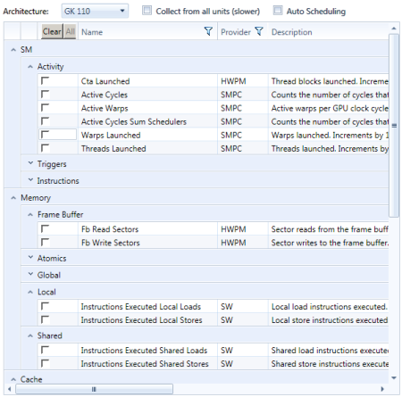 列出所选目标硬件架构上可用的计数器。默认情况下，本实验允许选择尽可能多、可在一次通道中一起收集的计数器。无法再加入当前选择的计数器会变为不可用状态，显示为灰色。 只有当所配置的架构与启动 kernel 网格的 CUDA 设备相匹配时，Performance Counters 实验的实例才会被执行；否则该实验实例会被忽略。如果报告输出中没有显示任何性能计数器信息，请仔细检查架构的配置。 选项Architecture 实验实例的目标架构。当需要在一次 Profile 捕获中记录来自多个不同 CUDA 设备的 kernel 启动时，可使用不同的目标架构实例化多个 Performance Counters 实验。不同架构上可用的计数器列表各不相同。 Collect from all Units 通过 HWPM provider 提供的计数器可能无法在一次通道中从所有现有硬件单元上收集。如果禁用该选项，所配置的 HWPM 计数器会在一次通道中从尽可能多的硬件单元上采样，优先考虑收集速度而非整体单元覆盖率。如果启用该选项，会执行多次 kernel 重放通道以确保该计数器从所有现有单元上都被收集到。虽然这会增加额外开销，但可以提供更准确的结果。报告输出中的 Coverage 列显示数据收集期间被观测到的单元百分比。本选项不会影响来自其他 provider 的计数器。 Auto Scheduling 可在一次通道中收集的计数器数量受硬件限制；因此，计数器可能变为不可选（变灰）。启用 Auto Scheduling 后，会使用多次通道来收集所请求的数据，从而解除这一限制。所使用的通道数以及计数器到重放通道的实际映射未做进一步规定。如果需要特定的调度方式，请添加多个 Performance Counters 实验实例，每个仅执行一次重放通道。 注意，收集所有计数器需要进行多次 kernel 重放通道，可能比较慢。 |
|
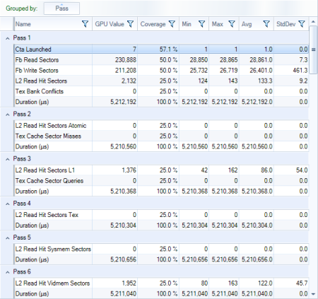 在一个表格中报告该 kernel 启动所有适用的 Performance Counters 实验所收集到的信息。每个配置的计数器在表中显示为单独的一行。对于每次执行的重放通道，也会一并报告 kernel 的整体执行时间。 从 SW 计数器 provider 收集计数器可能会显著影响 kernel 的整体性能。这可能导致不同重放通道之间所报告的 kernel 持续时间出现较大波动。但实际的计数器结果并不会受此影响。 列Pass 该计数器是在哪一次 kernel 重放迭代中被收集到的。便于理解计数器调度，并按本文 背景 章节所述确保派生指标的正确性。所有需要多次通道才能从全部硬件单元收集到的 HWPM 计数器都会被报告在 'Pass 0' 上。 GPU Value 按比例放大到始终覆盖目标设备所有现有单元后的计数器结果值。仅在两种情况下该值是一个估计值：第一，计数器值是跨多个通道的聚合（适用于在 'Pass 0' 中报告的所有计数器）；第二，该计数器未覆盖所有现有硬件单元（适用于覆盖率小于 100% 的所有计数器）。在这两种情况下，估计都假设负载在硬件单元间均匀分布。 |